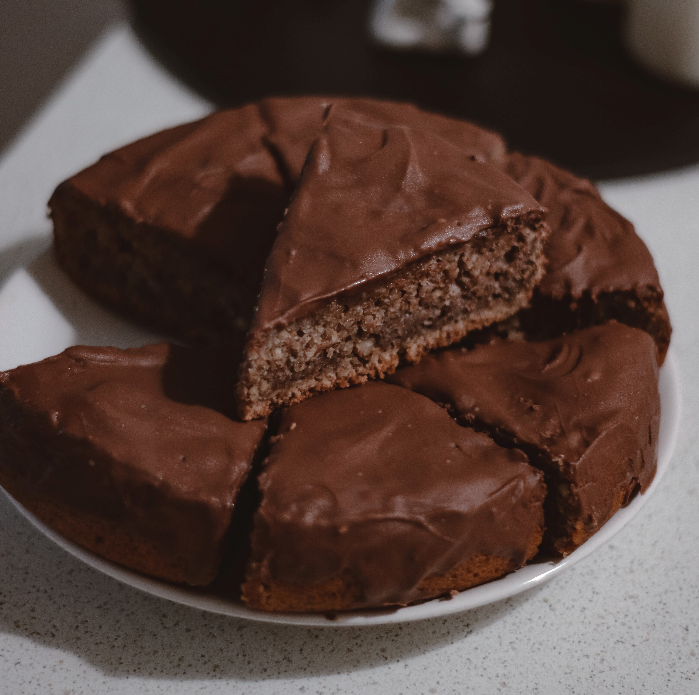

Ingredientes:
• 1 xícara (chá) de leite.
• 1 xícara (chá) de óleo.
• 2 ovos.
• 2 xícaras (chá) de farinha de trigo.
• 1 xícara (chá) de achocolatado em pó.
• 1 xícara (chá) de açúcar.
• 1 colher (sopa) de fermento em pó Margarina
e farinha de trigo para untar.
Modo de preparo:
No liquidificador, bata o leite, o óleo e os ovos. Coloque em uma tigela e misture com os demais ingredientes até ficar homogê- neo. Despeje em uma fôrma de 22cm de diâmetro untada e enfarinhada e leve ao forno médio, preaquecido, por 30 minutos ou até assar. Espere esfriar e sirva.